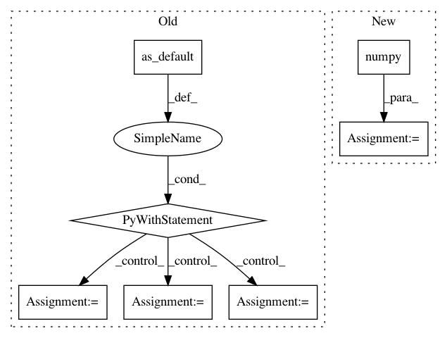

054095d922edda5134e520522bc82a1b95cc5bd4,onnx_tf/backend.py,TensorflowBackend,run_node,#Any#Any#Any#Any#Any#,167
Before Change
super(TensorflowBackend, cls).run_node(node, inputs, device)
node_graph = tf.Graph()
with node_graph.as_default():
node = OnnxNode(node)
device_option = get_device_option(Device(device))
input_tensors = []
for i in inputs:
input_tensors.append(tf.constant(i))
if isinstance(inputs, dict):
feed_dict_raw = inputs
else:
assert len(node.inputs) == len(inputs)
feed_dict_raw = dict(zip(node.inputs, inputs))
// TODO: is constant the best way for feeding inputs?
input_dict = dict([
(x[0], tf.constant(x[1])) for x in feed_dict_raw.items()
])
ops = cls._onnx_node_to_tensorflow_op(node, input_dict)
with tf.compat.v1.Session() as sess:
with tf.device(device_option):
sess.run(tf.compat.v1.global_variables_initializer())
output_vals = sess.run(ops)
return namedtupledict("Outputs", node.outputs)(*output_vals)
@classmethod
def _onnx_initializer_to_input_dict_items(cls, initializer):
After Change
module = TFModule(node)
output_vals = module(**input_dict)
output_vals = [val.numpy() if isinstance(val, tf.Tensor) else val for val in output_vals]
return namedtupledict("Outputs", node.outputs)(*output_vals)
@classmethod
In pattern: SUPERPATTERN
Frequency: 3
Non-data size: 7
Instances
Project Name: onnx/onnx-tensorflow
Commit Name: 054095d922edda5134e520522bc82a1b95cc5bd4
Time: 2020-09-09
Author: smonov@gmail.com
File Name: onnx_tf/backend.py
Class Name: TensorflowBackend
Method Name: run_node
Project Name: deepchem/deepchem
Commit Name: b68db1aaf6abe4d2cea8321cc6f1564228dd60f5
Time: 2019-05-31
Author: peastman@stanford.edu
File Name: deepchem/models/tensorgraph/models/seqtoseq.py
Class Name: SeqToSeq
Method Name: predict_from_embeddings
Project Name: onnx/onnx-tensorflow
Commit Name: 054095d922edda5134e520522bc82a1b95cc5bd4
Time: 2020-09-09
Author: smonov@gmail.com
File Name: onnx_tf/backend_rep.py
Class Name: TensorflowRep
Method Name: run